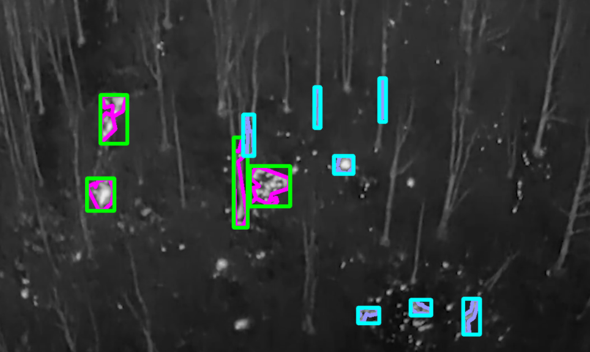

I am a Computer Science student at the University of Maryland with an enthusiasm for programming and aerospace related topics The following links showcase some general information about me and my projects
email | linkedin | githubI am a Computer Science student at the University of Maryland with an enthusiasm for programming and aerospace related topics The following links showcase some general information about me and my projects
email | linkedin | githubAug 2022 | Eek
- do something!
- Wow I really need to put something here
Aug 2022 | Eek
- do something!
- Wow I really need to put something here
June 2022 | C++
 - Implemented an image processing Algorithm to be used with UAVs in order to identify the severity of wildfires using thermal imaging.
- Utilized several post-processing techniques to achieve consistent identification of fires and their total surface area. Based on the data, each fire can be assigned a severity classification.
University of Maryland | March 2022 - Present
- Commence flight tests and demonstrations for aerospace-related projects. Diagnose issues and repair flight systems on unmanned aircraft—program autopilot software for full autonomous flights. Develop software for flight systems and image analysis.
- Working with Unmanned Aerial Systems in order to collect crucial data for research inquiries.
- Test pilot/researcher - UMD Department of Aerospace
- UMD Drone FPV racing team - Founding member/Administrator
- Involved in club XR - Augmented and Virtual Reality development club at umd
- Founding member of Baltimore Youth Cycling; Competed at nationals several years
- Vex Robotics Team Captain - Competed at World Cyclocross championships
- SDI Scuba Certification
- Languages: Java, Python, C, C++, HTML/CSS - Technologies: VSCode, Unity, Unreal Engine, Oculus, Arduino, Raspberry Pi, Google Suite/MS Office, Adobe Illustrator & Photoshop
- Object Oriented Programming I & II, Linear Alegebra, Calculus II, Discrete Structures, C Programming, Intro to Computer Systems